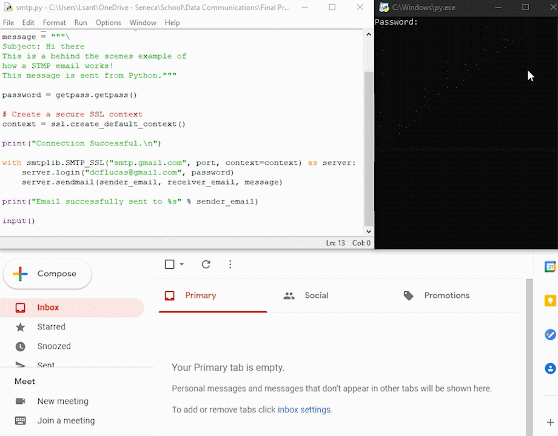

SMTP Demonstration
Gmail Demonstration
Utilizing the popular programming language Python, we can program a script which allows us to view the mechanics of how an email is sent using SMTP. For this example, we will be using the Gmail SMTP server to send an email from our script, right to our Gmail inbox. Within Python, we will be using the built-in library smtplib, to send basic emails. This library contains all the SMTP related functions that allow us to connect with a SMTP server as well as encrypt the emails in order to accommodate Gmail’s security features.

To begin the script, we define a few variables to hold information. We utilize a port variable to hold the integer 465, which corresponds to the Gmail SMTP port. We then define both a sender and receiver email which for this example, must end in @gmail.com. Then we define a message variable to contain the contents of what we want our email to include. Lastly, we define a variable context to create a SSL certificate to ensure a secure connection to the Gmail SMTP server.
Once all variables are defined, we move onto creating the connection to the SMTP server using the smptlib function SMTP_SLL(). This function creates the TLS certificate connection from our local machine to the Gmail SMTP servers. Using the smtp.gmal.com server name, port number, and context that was previously defined we are able to establish a secure connection to the Gmail SMTP servers. As Gmail is a password protected email service, we need to prompt the user for the password to their Gmail account in order to grant access to the Email services provided by Gmail. Upon successful login, we utilize the sendmail() function to send the email through the Gmail services, and from there Gmail processes the email through their SMTP servers and into the inbox of the receiver.
This is a surface level example to how email services function once the “send” button is pushed. Behind the scenes of this, each email provider has their own SMTP server to route all inbound and outbound emails to their corresponding email provider and receiver.
Local Host Demonstration

Like the previous example of how SMTP functions when using Gmail, we are also able to use an alternate version locally on a user’s pc. We are able to take advantage of using Pythons SMTP debugging server to allow us to communicate with a locally hosted server to practice or test SMTP functions.
In order to begin, we must first run the debugging server locally by using the command “Python -m smtpd -c DebuggingServer -n localhost:1025” in the user’s shell of choice. This will turn that specific shells session into the Python SMTP debugging server and will stay actively opening listening for any inbound connections.
The script itself is similar to the Gmail example, but omits the need for a SMTP address, and user login. Two noticeable differences are the variables port and server. The port number is changes to 1025, a unused port number we can assign to our localhost server. The server variable is declared as “localhost” as we are using our current machine to host the SMTP server. We utilize the same function of SMPT() to build a connection to the debugging server by using the variables server and port. Since we are using a local server for practice, we omit the use of SMTP_SLL() as we do not require a secured connection. Since our debugging server is waiting listening for a connection, once the server.sendmail() function is passed our debugging server listens to the connection and displays the email within the console.
The purpose of a debugging server allows you to practice your script without suffering any severe consequences when connecting to an email providers SMTP server. Additionally, all messages sent are only being displayed as output and are removed after.